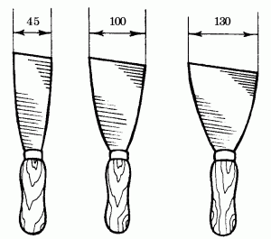
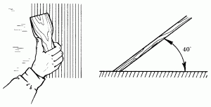
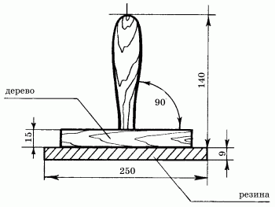

Шпаклевание стен.

Идеально ровную поверхность под покраску или оклеивание обоями можно получить с помощью шпаклевания. Как правило, к шпаклеванию стен приступают после того, как подсохнет слой грунта. Нужно заранее запастись всеми необходимыми инструментами.
Для шпаклевания стен потребуются только шпатели разного размера. К примеру, если нужно лишь частично выровнять стену, для работы подойдет шпатель длиной 60 см. Для нанесения последних слоев (так называемая финишная шпаклевка) потребуется применить шпатель длиной 20 см.
Для чего нужен шпатель и что он собой представляет? Шпатель – тонкая металлическая, пластиковая или деревянная пластина с деревянной или пластиковой рукояткой (рис. 4) – предназначен для заделки щелей и неровностей, устранения любых других дефектов, обнаруженных на стенах.

Рис. 4. Виды шпателей.
Вполне возможно, что сначала процесс шпаклевания покажется вам довольно сложным, ведь любому новому делу невозможно обучиться сразу. Хорошо, если у вас есть возможность проконсультироваться с более опытным мастером и поучиться у него набирать требуемое количество раствора (проблема состоит в том, что, если набрать на подложку лишнюю шпаклевку, она останется на стене в виде некрасивых наплывов). В противном случае придется самостоятельно, руководствуясь методом проб и ошибок, учиться этому мастерству (рис. 5).

Рис. 5. Угол наклона шпателя относительно стены.
Невозможно подсчитать, сколько шпателей может быть использовано при отделочных работах, но каждый из них, как считают профессионалы, крайне необходим. Тем не менее совсем не обязательно покупать все виды шпателей, ведь их более тридцати. Можно ограничиться двумя – либо одинаковыми, либо разными. Так, в правой руке обычно держат шпатель несколько большего размера, а шпателем, находящемся в левой руке, снимают излишки раствора с правого шпателя и со стены. Иногда профессиональные мастера работают так быстро, что при наблюдении за их работой издали кажется, будто они просто точат шпатели друг о друга.
Начиная шпаклевать стену, следует набрать шпаклевку на тот шпатель, который держат в правой руке. Вся шпаклевка должна находиться в широкой плоской емкости (например, в тазу), для того чтобы ее легче было забирать.
Толщина шпаклевочного раствора зависит от угла наклона шпателя: чем меньше угол наклона шпателя относительно стены, тем тоньше будет слой шпаклевки, а именно такого результата и следует добиваться. При большей толщине слоя шпаклевка после высыхания растрескается и потребует дополнительных усилий по исправлению дефектов.
Для того чтобы получить идеально ровную поверхность стены, нужно нанести не менее трех слоев шпаклевки, при этом каждый последующий наносится только после высыхания предыдущего. Сначала наносят первый слой, затем поверхность снова покрывают тонким слоем грунтовки и только после этого наносят второй слой шпаклевки. Можно, конечно, обойтись и без грунтовок, но тогда потребуется гораздо больше усилий для того, чтобы придать стене наибольшую гладкость. Кроме того, шпаклевка, выполненная по грунтовке, ложится более тонким слоем.
Для разглаживания шпаклевки по стене потребуется шпатель-полутерок (рис. 6). В данном случае можно также использовать пистолет-пульверизатор, с помощью которого наносить шпаклевку на стену будет очень легко. Но, и в этом случае потребуется полутерок для разглаживания.

Рис. 6. Шпатель-полутерок.
Следует взять немного шпаклевки и нанести ее на поверхность стены не очень толстыми мазками, затем нажать на лезвие шпателя чуть сильнее и разровнять шпаклевочный слой движениями по вертикали (некоторые мастера предпочитают разравнивать шпаклевку по горизонтали). Разравнивают шпаклевку до получения очень тонкого слоя, излишки же постоянно собирают шпателем, который держат в левой руке. Эти излишки, не смешивая их с остальным раствором шпаклевки, находящимся в емкости, сразу же наносят на стену.
После того как поверхность ошпаклеванной стены подсохнет, ее нужно отшлифовать пемзой или шкуркой. На зачищенной таким образом поверхности не должно быть никаких дефектов вроде различных царапин, трещин, шероховатостей и пр.
Ниже приведены рецепты для приготовления шпаклевок в домашних условиях (для тех, кто решил обойтись исключительно собственными силами).
Масляно-эмульсионная шпаклевка для внутренних работ:
– натуральная олифа (1 кг);
– 10 %-ный костный клей (2 л);
– растворитель (0,4 л);
– молотый мел (по мере необходимости).
Прежде всего нужно приготовить клеевой раствор, а затем при быстром помешивании влить олифу. Туда же вводятся растворитель и мел (по мере необходимости). При использовании олифы «Оксоль» растворитель не применяется.
Шпаклевка на грунтовочном составе:
– грунтовка купоросная (10 л);
– животный клей (1 л);
– молотый мел (по мере необходимости).
Шпаклевка из синтетических материалов:
– клей КМЦ (1 л);
– латекс (0,5 кг);
– асидол (0,2 кг);
– 10 %-ный раствор мыла (0,2 кг);
– мел (250 г).